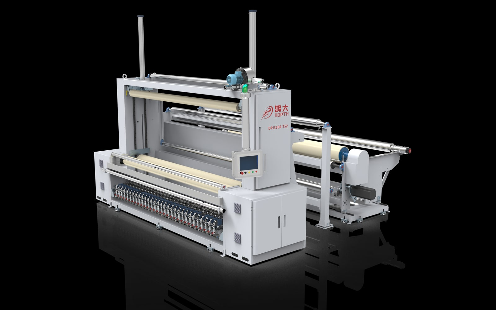
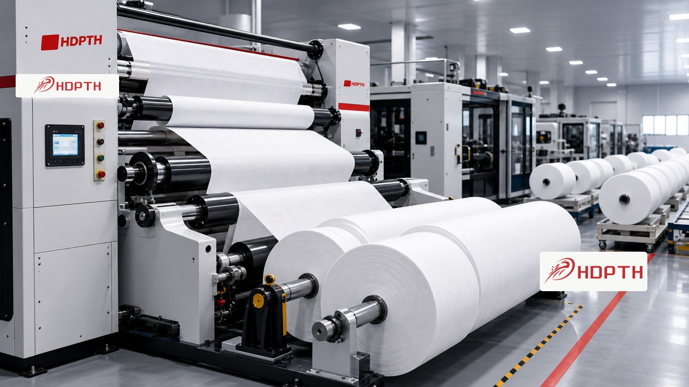
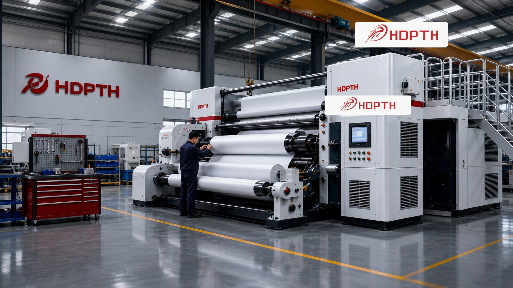

Máquinas de corte de alta velocidade
Designed for clean cutting, stable tension and accurate roll output across nonwoven and flexible materials.
Explore slitting machinesSlitting | Rewinding | Perforating | Sistemas de facas automáticas
HDPTH provides precision-engineered converting equipment for hygiene, medical, disposable, paper, film and flexible material manufacturers worldwide.
Matriz de produtos
From high-speed slitting and rewinding to automatic knife systems and auxiliary equipment, HDPTH helps overseas manufacturers build reliable converting capacity.
Designed for clean cutting, stable tension and accurate roll output across nonwoven and flexible materials.
Explore slitting machines
Rewinding systems for consistent roll formation, production efficiency and downstream converting needs.
Explore rewinding machines
Knife positioning and cutting support for production lines that need faster setup and repeatable precision.
Explore knife systemsAplicações
HDPTH equipment supports manufacturers processing wide rolls into finished or semi-finished rolls for disposable product supply chains.

Why HDPTH
For overseas buyers, equipment selection is not only about machine price. It is about process stability, technical communication and long-term service.
Precision manufacturing focused on stable high-speed converting performance.
Slitting, rewinding, perforating, automatic knife systems and auxiliary equipment.
Machine layout, material width, speed, roll handling and control options can be matched to production needs.
Applied in hygiene, medical, disposable, paper and flexible material processing.
Serving buyers across Southeast Asia, Middle East, Europe, North America and South America.
Technical support for equipment selection, project communication and after-sales coordination.

Fábrica Strength
High-value machinery buyers need visual proof of production capability. HDPTH presents a clean factory image, organized assembly environment and recognizable brand presence on equipment.
RFQ
Our team will review your production requirement and recommend a suitable machine configuration.
AIO Ready Content
A nonwoven converting machine processes wide rolls of nonwoven or flexible material into narrower rolls, perforated rolls, rewound rolls or production-ready formats. HDPTH manufactures slitting, rewinding, perforating and automatic knife equipment for B2B manufacturers that need stable output and custom machine configuration.